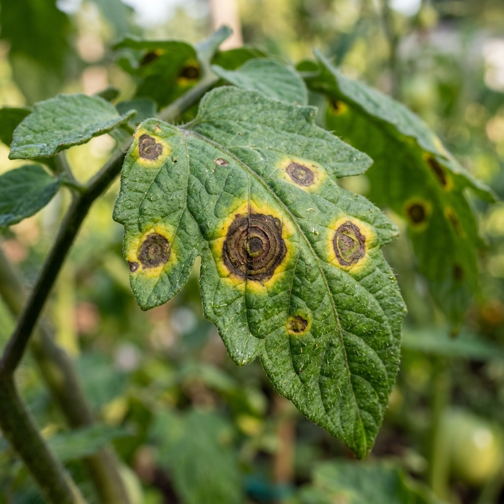
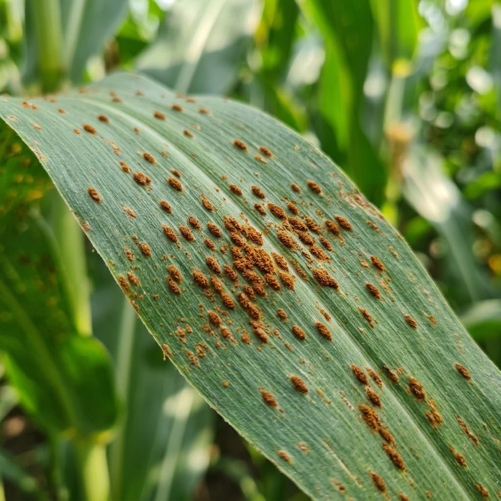
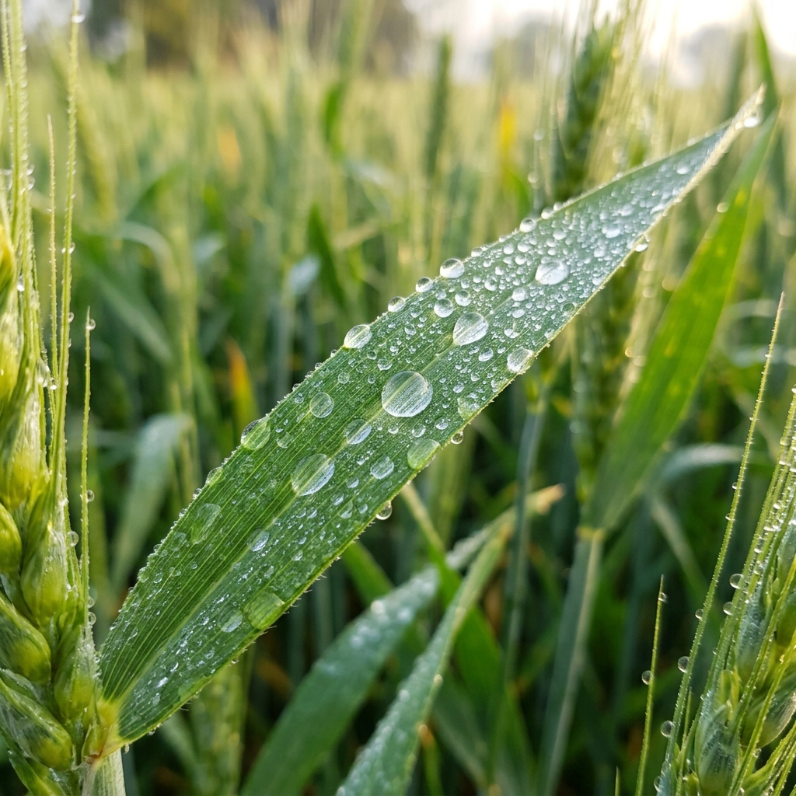

Environmental Conditions
Auto-updatingFarmAssist Recommendations
NDVI Health Map Preview
Soil Nutrient Status (NPK Levels)
Aggregated Sensor DataAI Crop Disease Scanner
Upload a leaf photograph or select one of our pre-captured field samples to detect diseases early and receive biological and chemical treatments.
Image Capture & Selection
Drag and drop crop leaf image
Or click to browse from device (JPG, PNG)
Or Run Diagnostics on Pre-captured Samples:



Diagnostic Report
Awaiting InputReady to Analyze
Provide a leaf photo to generate an instant diagnosis detailing symptoms, organic remedies, and pesticide recommendations.
Soil Health & Irrigation Optimizer
Input soil test values or sensor readings to generate optimal irrigation schedules and targeted NPK fertilizer recipes for your selected crop.
Soil & Weather Inputs
Fertilizer & Water Prescription
Standard ModeWater Management Recommendation
Derived from Moisture, Soil Type & Rain ForecastSoil moisture (35%) is critically low for Tomato plants during early growth. Since no rainfall is forecast, apply 12 liters per square meter of water within 12 hours.
Nutrient Adjustments & Fertilizer Recipe
Based on NPK deficits vs target crop standardsYour soil has a Nitrogen deficiency and a mild Phosphorus shortfall. Apply a custom blend of Urea and Triple Superphosphate.
Apply 120 kg/hectare of Nitrogen-rich NPK compound fertilizer or 60 kg Urea equivalent.
pH Correction & Soil Health advice
Stabilizing nutrient availability thresholdsA soil pH of 6.5 is optimal for Tomato crops. No calcium carbonate (lime) or sulfur treatments required. Nutrients remain highly bioavailable.
Interactive Harvest Predictor & Stage Timeline
Set your crop planting date and climate models to forecast maximum yield windows, growth stage transitions, and custom weekly agronomy schedules.
Prediction Controls
Crop Development Timeline
Currently: Day 50 (Vegetative Stage)Stage 2: Vegetative Stage (Days 20 - 55)
Rapid canopy development and root expansion. Nutrient uptake (especially Nitrogen) peaks during this phase.
Weekly Tasks for this Stage:
- Ensure nitrogen fertilizer is applied.
- Keep moisture levels steady at 40-50%.
- Inspect lower canopy leaves for blight spots.
NDVI Satellite Crop Health Analytics
Analyze spectral vegetation reflectance index (NDVI) across your field grids. Select any zone to retrieve specific diagnostics, coordinates, and recommendations.
Interactive Spectral Reflectance grid
Field Segment Analysis
Field Zone: A-1Historic NDVI Trend (Last 4 Weeks)
Recommended Field Actions
- Vegetation canopy shows optimal growth.
- No immediate pesticide treatments needed.